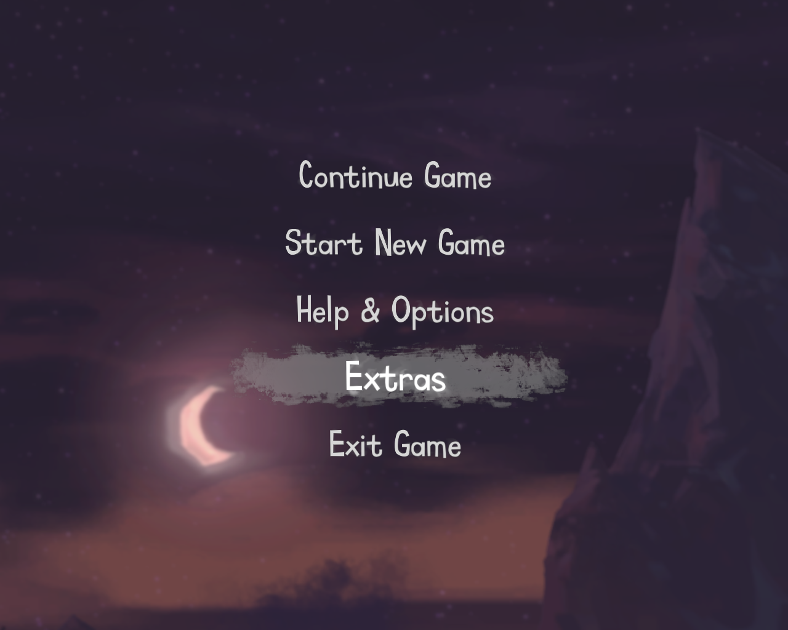

The Cave
Sega'nın yayımcılığını yaptığı ve efsane macera oyunları "Maniac Mansion" ve ardından gelen "Monkey Island" oyunlarının yapımcılarından eğlenceli, bir o kadar da düşündürücü bir oyun: The Cave.

Birkaç ay önce bizim Bekir’i gördüm. Zaten 3-5 tane olan saçlarının beyazlaması dışında, pek az değişmiş. Bizim malzeme hangarının kapısına yaslanmış, hem çayımı yudumluyor hem de gelen geçeni izliyordum. Önümden geçiverdi. Onu hemen tanıdım. Beni tanımadı. Nasıl tanısın zavallı?! En son beni, 1992 ya da 1993 senesinde görmüştü.
“Abi, bu Sonic olayları çok iyi yaa.. Sesler, görüntüler falan.” Sega Game Gear oyunlarından Sonic’i açtığımda, kocaman logonun yanında “Segaaaa” diye bağıran bir ses karşısında bunu demişti ve yarılmama sebep olmuştu. :-) Lise yıllarımda, kapısında oyunlarımı getirecek olan kargo aracını yarım gün boyunca beklediğim İnegöl Çarşısı’ndaki ilk Sega bayiinin sahibi idi Bekir. “Bu da nereden çıktı şimdi?” diye mi soruyorsunuz? Hiiiç! Sadece The Cave oyunun açılışında gördüğüm logo beni taaa o günlerime geri götürdü: Sega.
The Cave, Sega’nın ustası olduğu bir oyun türü olan platform / macera türünde bir oyun (Sonic serilerini bilen bilir zaten). The Cave, Left4Dead 2 ve Serious Sam 3’ten sonra, Steam’in beta zamanlarında GNU/Linux ortamına port edilen 3. oyundur.
Birbirinden enteresan ve farklı özel yeteneklere sahip 7 kişilik bir turist grubunun, büyülü bir turistik mağarayı ziyareti ile başlıyor oyunumuz. Ancak bu 7 arkadaşımız, oldukça karanlık geçmişlere sahiptirler. Kimisi karşılıksız aşkın, kimisi öfkenin, kimisi ise kıskançlığın pençesinde, en çok arzu ettikleri şeyi alabilmek için, her türlü hile ve düzeni yapmışlardır. Hatta gözleri, cinayet işleyecek kadar kararmıştır.
Ancak gelmiş oldukları mağara da sıradan bir turistik mağara değildir. Onların kalplerindeki karanlıklar kadar karanlık dehlizlere sahip, büyülü bir mağaradır. Onlar’a, kalplerindeki bu karanlığı yansıtarak, paha biçilmeyecek bir şey sunmaktadır: Ders. Ama alıp almamak, onlara kalmıştır elbette. Yine de hemen onları yargılamayın. Sizin kalbinizdeki karanlık dehlizler nereye açılmaktadır? Mağaranın derinliklerinde, belki siz de kalbinizin derinliklerinden bir şeyler bulabilirsiniz, kim bilir? Karşılık alamadığınız bir aşkınız, kıskandığınız bir iş arkadaşınız, başarıyı sadece kendisininmiş gibi gösteren bir ekip elemanı? Ne dersiniz?
Oyun, ticari lisansa sahip ve GNU/Linux sürümünü Steam üzerinden 15$ karşılığında satın alabilirsiniz.
Oyunun asgari sistem ihtiyaçları:
- Linux kernel 3.2
- Glibc 2.15
- 1.8 Ghz Intel Dual-Core ya da dengi AMD işlemci
- 1 GB RAM
- OpenGL 2.1 desteği aktif 256 MB GeForce 8800 veya Radeon HD 2000 veya üzeri ekran kartı
- 1.5 GB disk alanı
Oyunu ilk çalıştırdığınız zaman, alışılmışın dışında, doğrudan mağara girişinde bekleyen karakterlerimizi seçme ekranı ile karşılaşıyoruz. Yani oyunun bir ana menüsü gelmiyor. Açılışta sadece bir “Press Enter” yazısı beliriyor ve Enter tuşuna bastığımızda ekran karakterlere doğru kaymaya başlıyor. Ancak sonraki açılışlarda ana menü ile karşılaşıyorsunuz.

“Continue Game” otomatik olarak son oyunun kaldığı yerden oyunu tekrar başlatıyor. Bu seçenek elbette ilk açılışta çıkmıyor ve doğrudan “Start New Game” ile yeni oyun başlıyor. “Help & Options” kısmı, oyunun ayarlarını ve karakterlerimizin özelliklerini anlatan bir yardım listesini açıyor. Ayarlarımız oldukça temel özelliklerde. Ekran çözünürlüğü, tazeleme oranı, ses ayarları ve temel görüntü efektlerinden (anti-alliasing, saha derinliği, SOB gibi) ibaret. Ancak grafik ayarlarından VSYNC (dikey tazeleme) ayarını kapatmak isteyebilirsiniz. Varsayılan olarak açık geliyor. Yine ses ayarları altında bulunan Subtitles (alt yazıları) açın. Bu da kapalı geliyor. “Extras” kısmı, karakterlerimizin hikayelerini gösteren mağara resimlerini görmemizi sağlıyor. Bu resimleri mağarada bulabiliyoruz. Her karakter için 8’er adet resim var mağarada. Mağaradan çıkmaya çabalarken, bunları da bulmamız gerekiyor. Ancak burada, mağarada bulmuş olduğunuz resimleri görebiliyorsunuz elbette.
7 karakterden 3’ünü seçerek, oyuna başlıyoruz. İşin güzel kısmı, seçtiğimiz karakterlere göre, mağaranın bölümleri değişiklik gösteriyor. Mağarada ortak bölümler olduğu gibi, her karakterin ancak kendine has özelliklerini kullanarak geçebileceğimiz kısımlara sahip özel bölümleri de var. Yani mağaranın tamamını görebilmeniz için, her karakter ile oynamış olmanız gerekiyor. Oyunda 6 adet ortak bölüm var. Hangi karakter kombinasyonu ile oynarsanız oynayın, bu bölümleri mutlaka oynuyorsunuz. Ancak sıra değişiyor elbette. Bunlara artı olarak bir de seçtiğiniz 3 karakterin özel bölümlerini oynuyorsunuz. Bu karakterlerimiz:

The Monk (Rahip): Bir Shaolin rahibi. Bu rahipler, manastıra daha küçük bir çocukken alınır, seneler süren zorlu bir eğitim sonunda basamakları çıkarlar ve sadece en iyisi büyük usta seviyesine ulaşabilirdi. Beceri, hız, güç, odaklanma gibi yeteneklerini güçlendirirlerdi rahipler. Ama bazen bunların yerine, başka beceriler işin içine girerlerdi: Öfke, hile, ihtiras, hırs gibi. Büyük ustanın yerine geçmek için onu tüm tapınak disiplinlerinde yenmek gerekirdi. Ya da…
Bu karakterin özel gücü telekinezi. Yerde bulunan herhangi bir nesneyi telekinezi ile, aradaki engel ne olursa olsun, eline alabilir. Rahibin kendi bölümü, Shaolin tapınağıdır. Burada rahibimize, üstadı tahtından etmesinde yardımcı olacağız.
The Adventurer (Maceracı): Indiana Jones’un kadın versiyonu. Arkeolojik bir grubun üyesi. Ama ekip üyesi olmak, onun karakterine aykırı. Paylaşmak? O, bu terimin anlamını bile bilmez. Tüm şan ve şöhrete sahip olmalı. Diğerleri de kim oluyorlar? O olmasaydı hepsi bir hiçti. Ama her kare fotoğrafta da vardılar. Tarihin sırlarını saklayan dehlizler bazen tehlikelerle dolu olabiliyor. Tuzaklar, hayvanlar, dehlizin birden çökmesi… Her an birileri kazara(!) yaralanabilir ya da daha güzeli.. Pardon kötüsü ölebilir bile.
Maceracının özel gücü, duvarlardaki kanca ya da çıkıntılara takılan kancalı ipi. Diğer karakterlerin atlayamayacağı mesafelere ya da yüksekliklere, bu kancayı kullanarak rahatlıkla gidebiliyor. Maceracının kendi bölümü, Mısır piramidi. Buradaki altın bir lahiti çıkarmak için ve meslektaşlarından kurtulması için ona yardım etmemiz gerek.
The Hillbilly: Kalabalık bir ailenin, ebeveynlerinin bile adını hatırlamadığı oğullarından biriydi. Kendi küçük bir peluş ayısı vardı ve tek arkadaşı buydu. Kendi kendine, paldır küldür büyüdü ve kasabasındaki karnaval alanında çalışmaya başladı. İşte aşkını orada buldu. Karnavaldaki o güzel kadın. O’na hediyeler aldı ama her defasında reddedildi. Aaaahhh…. Küçük peluş ayıcık. İşte bu hediyeyi kimse reddedemezdi. O’nun biricik dostu olmuştu bu ayıcık ve tek hazinesi. Ama olsun, kadınının kalbini kazanacaktı ya. Haaa…??! Meğer o kalp, başkasına aitmiş. Karnavaldaki başka birine. Hillbilly’nin kalbini yakmanın cezasını çekmeli. Buradaki herkes çekmeli hatta…
Hillbilly’nin özel gücü, körük gibi çiğerleri. Suya dalmadan önce aldığı derin nefes ile takımın diğer üyelerinden çok daha uzağa ve derine yüzebiliyor. Billy’nin özel bölümü, aşkın ihanetine uğradığı karnaval alanı. Buradan kadınına aldığı peluş ayıcığı kurtarıp, aşkını (aşkıyla beraber tüm karnavaldakileri) cezalandırması için Hillbilly’ye yardım edeceğiz.
The Scientist (Bilgin): Laboratuar önlüğü ve koca gözlüğü ile hemen diğerlerinden ayrılan karakterimiz. Onca testler, çalışma saatleri, çözülen problemler, okunan binlerce yayın… Ve sonunda başarı. Bundan kim yararlanacak peki? İnsanlığın faydasına kullanmak mı? Karşılığında maddi getirisi ne olacak peki? Boşversene. Kim en fazla parayı verirse, bilgi onundur. Kime karşı, neye karşı kullanıldığı kimin umrunda…
Bilginin özel gücü, sistem kırma yeteneği. Kapı kontrol terminalleri, alarm kontrol terminallerini bir kaç saniye içinde kırabiliyor. Bilginin özel bölümü, bir nükleer füze laboratuarı. O’na, laboratuardakileri etkisiz hâle getirip füzeyi fırlatması için yardım edeceğiz. Merak etmeyin, nükleer bir füzeyi fırlatmak, bilgin için cips yemek kadar basit bir şey. Nereye mi düşecekmiş bu füze? Size ne canım…
The Twins (İkizler): İki küçük kardeş. Ne kadar güzel, el ele de tutuşmuşlar. Londra’da bu iki küçük çocuğa sahip, iyi bir aile. Çocuklar, dışarı çıkıp oynamak istiyorlar. Ne kadar masum bir istek. Aynı masumiyette bir yanıt geliyor ebeveynlerden: “Yemeğinizi yemeden olmaz.” Ama bizim çocuklarımız, “Peki anneciğim, peki babacığım.” diyecekler mi? Yoksa özgürlüklerinin kısıtlandığını düşünüp, ebeveynlerini yoldan çekmeye mi çalışacaklar? Canları pahasına da olsa. Yok canım, o kadar da ileri gidemezler herhâlde. Yoksa gidebilirler mi?
İkizlerin özel gücü, hayalet yansımaları. Bu gücü kullandığınızda, kullandığınız andaki konumları ne ise, o konumda ikizlerin hayalet görüntüleri oluşuyor ve orada kalıyorlar. İkizler, ekrandan çıkmadıkça, hayalet görüntüleri de orada kalıyor. Mesela, bir kolu çekip de bir başka yere gitmeniz gerekiyorsa, kolu ikizlerle çekip hayalet görüntüyü oluşturursanız, hayalet görüntü kolu çekmeye devam ederken, ikizleri ekranda herhangi bir yere götürebilirsiniz. İkizlerin özel bölümü, gotik tarzda bir klasik İngiliz evi. Yani kısaca evleri. İkizlere, buradan çıkmaları için, ebeveynlerini saf dışı etmelerinde yardımcı olacağız.
The Knight (Şövalye): Bir mağaraya girerken, yanınızda bir şövalyenin olmasının iyi bir şey olduğunu düşünüyorsanız, bir daha düşünün. Her zırh giymiş adamı, şövalye sanmayın. Hayat bazen, birilerinin karşısına, hiç haketmedikleri bir yere birden gelme şansı çıkarır. Peki bu şans kullanılmalı mıdır? Peki bu yere gelinmesi, başkalarının yaralanmalarına, ölmelerine, diri diri yenmelerine, hatta felaketlerine sebep olsa bile mi?
Şövalyenin özel gücü yok edilememezlik. Şövalye bu gücü aktif hale getirdiği zaman hiçbir şeyden etkilenmiyor. Düşmek, herhangi bir saldırı, hiçbir şey onu etkilemiyor. Ancak bu gücü kullanırken, şövalye kımıldayamıyor. Şövalyenin özel bölümü kale. Bir kıraliyet kalesinde, taşa saplı duran kılıcı çıkartarak, gerçek kahraman olduğunu ispatlamasında şövalyeye yardımcı olacağız. Kim demiş hileciler kazanamaz diye? Tabii ki kaybedenler. Muhahahahaha….
The Time Traveler (Zaman Yolcusu): Neon ışıkları ile süslü karakterimiz. Geleceğe hoş geldiniz. Eh, gelecekte de insanlar yaşamlarını sürdürmek için çalışmak zorundalar. Pek çok şey gelişse de insanlar hâlâ çalışmak durumundalar. Bazı şeylerse hiç değişmiyor. İş yerindeki kıskançlıklar mesela. Tüm zamanların en iyi çalışanı haa?? Pöh! Patron yalakası. En iyi çalışan elbette ki o değil. Ama bütün parsayı o toplamış. Bir de o kibri yok mu? Şunu yoldan çekmenin zamanı geldi. Müzede bir yerlerde bir zaman makinesi olacaktı. Şöyle kanunların olmadığı kadar eski bir zamana geri giderek, şunun bilmem kaçıncı büyük büyükbabasını bulup da… Adamın ne günahı mı var? Bunun atası olması yeter.
Zaman yolcusunun özel gücü, bulunduğu yerden silinip birkaç metre ileriye ışınlanabilmesi. Bu özellik, gözle görülen ancak gidilemeyen parmaklıklar arkası gibi yerlere, zaman yolcusunun gidebilmesini sağlıyor. Zaman yolcusunun özel bölümü ise, zaman makinesi ve çalıştığı müze. Ama burada, üç farklı zaman diliminde (günümüz, gelecek ve taş devri) zaman yolcusuna, tüm zamanların en iyi çalışanının büyük büyük büyükbabasını tarihten silmek için yardım ediyoruz.
Karakterlerimiz bunlar. Eh, bu sefer iyi karakteri oynamayacağız.

7 karakterden, 3 tanesini seçerek oyuna başlıyoruz. Karakter seçimi için, bir karakteri alıp, sağ taraftan levyeyi alıyoruz ve bu levye ile mağara girişini bloke eden tahtaları söküp, mağaraya giriyoruz. Tahtaların bloke ettiği kapıdan soktuğunuz 3 karakter, 1, 2 ve 3 numaralı tuşlara atanıyor ve bu şekilde karakterleri seçmiş oluyorsunuz. Oyun pattadanak başlıyor. Ne bir demo, ne de bir alıştırma kısmı var.
Oyun platform ve macera türlerinin birleşimi olarak ve eski-ekol dediğimiz bir tarz altında, ama yeni nesil grafiklerle sunulmuş. Macera oyunlarındaki tipik kontrol olarak fare ile bir yere tıklayarak karakteri götürebilirsiniz; ya da klavye ile de karakterimizi kontrol edebilirsiniz. Bu tip kontrol, macera oyunlarına biraz ters ama bir yere tıklayıp da karakterin oraya gitmesini beklemek bazen sıkıcı oluyor. The Cave, aslında platformdan çok, macera tarafı daha ağır. Öncelikle oyunda ölmek yok. Fazla yüksekten düşmek ya da kazıklara veya lavlara çakılmak öldürüyor evet, ama en yakın yerde tekrar beliriyorsunuz. Bu belirme hakkı da sınırsız. Yani oyunda ölmek diye bir şey yok.
Doğru ya da yanlış karakter kombinasyonu diye bir şey de yok. Ortak bölümlerde, her karakterle karşılaştığınız bulmacaları çözebiliyorsunuz. Ancak karakterler kendi bölümlerine sadece kendi güçlerini kullanarak girebiliyorlar. Oyunda mağarada bazı nesneler bulup, bunları doğru yerde kullanmak bulmacaları çözmenin sadece bir yarısı. Diğer yarısı ise takım oyunu oynamaktan geçiyor. Ekipten biri ya da ikisi, bir kapıyı açan kolu (kolları) tutarken, öbürü geçiyor en basitinden. Oyun boyunca, gerçekten takım çalışması sergileyeceksiniz. Hatta bu karanlık tiplerin, arzularını yerine getirmekte gösterdikleri takım çalışmasına hayret edeceksiniz. :-)
Mağaranın tamamını görmek için, 7 karakterin hepsiyle oynamanız gerekecektir. Bu da oyunu, bir kaç kez oynatacak bir unsur. Ana hikâye değişmiyor ama. Oyun boyunca bazı duvar resimlerine rastlayacaksınız. Bunlar karakterlerinizin hikayelerini ortaya çıkaran resimler. Karakterlerin hikayeleri için bu resimleri açabilirsiniz, ancak oynanışa bir etkileri yok. Bu resimler:
şeklindedir. Bunların yanına herhangi bir karakter ile gelip kullanma tuşuna basarak resmi açabilirsiniz.

Macera oyunlarında olan envanter sistemi, bu oyunda da var. Çünkü bir yerlerden bir şeyler almanız gerekiyor. Envanterimiz oldukça basit. Her karakter sadece bir nesne taşıyabiliyor ve bu nesne de elinizde görünüyor. Kullanmanız gereken yere geldiğinizde ise, kullanma tuşu ile kullanabiliyorsunuz.
Oyunun grafikleri gayet güzel hazırlanmış. Render karakterler, detaylı bir arka plan çizimi üzerine konulmuş. 2 boyutlu grafikler, point&click tarzını yansıtıyor. Ancak bu grafik üzerinde sağa sola gitmek, zıplamak gibi eylemlerimiz var. Yani bir macera oyunundan biraz daha hızlı ve akrobatik bir oyun. Ancak bir Trine da beklemeyin. Ölümcül tuzaklar, çöken platformlar gibi şeylerle de karşılaşmıyorsunuz.
Sesler oldukça güzel. Ses efektleri, NPC’lerin konuşmaları ve başından beri olayları anlatan ve karakterlerimizin yaptığı her hareketi oyun boyunca değerlendiren konuşan mağaramız (ki Stephen Stanton’un karizmatik sesi oluyor) oldukça başarılı olmuş. Ancak oyunda karakterlerimizin sesini duyamıyoruz. Sadece bir şeyi yapamadıkları zaman bir “a-ah” sesi çıkarıyorlar.
Oynanışta da oyunun öne çıkan unsurları; farklı karakterler, birden fazla çözüm şekilleri ve biri iyi, biri kötü olmak üzere iki ayrı sonla oyunu bitirebilmemiz. Kontroller biraz hantal kalmış. Animasyonların akıcılığına karşın, karakterler biraz geç tepki veriyorlar. Ama hiç önemli bir hata değil. Trine’da olsa belki eksi not olabilirdi ama The Cave’de, ani tepkiler vermeniz gerekmediğinden, oynanışı pek etkilemiyor. Ancak oyun biraz kısa olmuş.
Ne tam platform, ne de tam bir macera oyunu olmasa da, tekrar tekrar oynanabilecek enteresan bir oyun olmuş The Cave. Monkey Island ve Maniac Mansion macera oyunu yapan ekipten de daha azı beklenemezdi zaten.